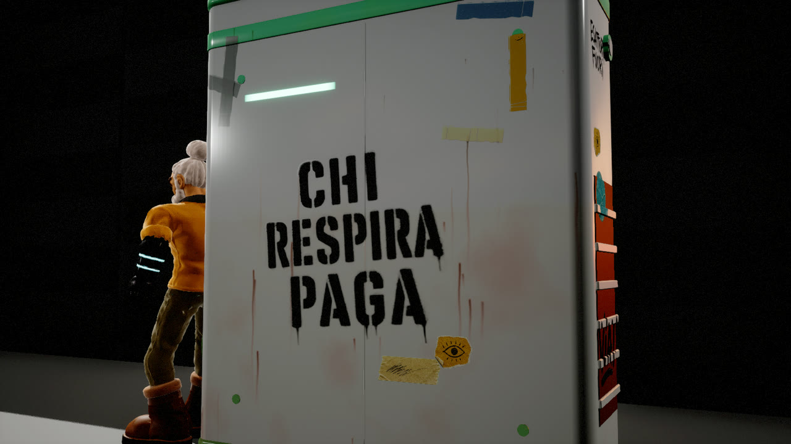
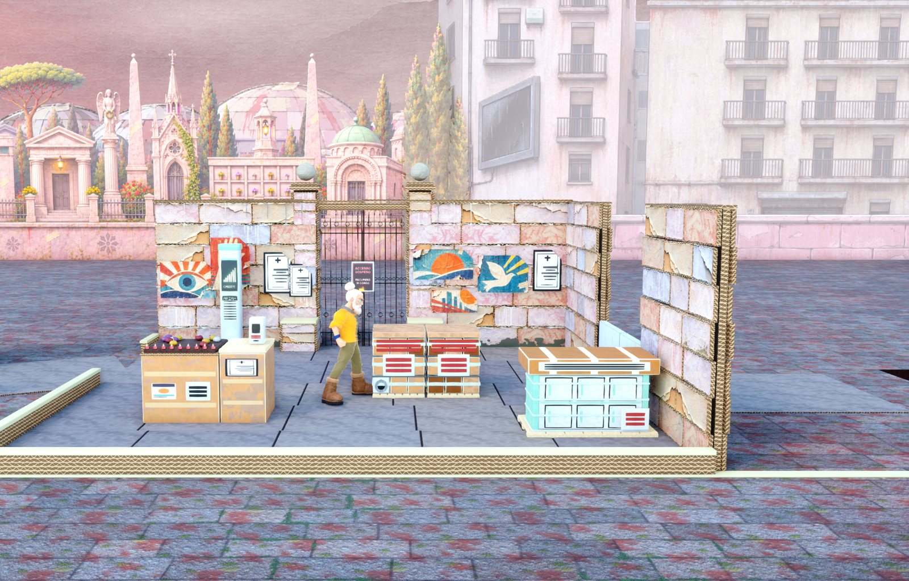

Mimmo
L'amico d'infanzia, gruista anche lui. Il braccio numero 2 è il suo: GIG gliel'ha costruito dopo l'incidente al porto. È morto la notte dei morti del 2086, nel sonno. Per SIDERA è stato un malore.
Taranto, 2087. Giovedì Santo. I perdoni escono dal Carmine, scalzi. Al cimitero, due Esattori vengono a pignorare un braccio.

Platform d'azione in 2,5D
In sviluppo
Instagram e YouTube: in arrivo
Si corre, si salta due volte, si scavalca una città di cartone. La camera segue GIG di lato come un operatore sul set: stringe quando arrivano gli Esattori, si alza quando si apre la vista, gira con la strada.

Tombe, tetti, ponteggi, purificatori d'aria. Tutto quello che regge un uomo di cinquant'anni è una piattaforma.
Gli Esattori sono gente dei quartieri, presa a giornata, con un braccio a noleggio. Non si abbattono: gli si stacca il guinzaglio.
Il braccio cyber apre quello che SIDERA ha chiuso. Ogni sua funzione era a pagamento: GIG se le riprende, una alla volta.
A San Brunone le lapidi bianche non restano bianche: chi è dei Tamburi lo sa da sempre. Nel 2087 la fabbrica è spenta da più di sessant'anni, chiusa sotto cupole bianche. La nube rossa è rimasta. SIDERA la chiama «vapore di bonifica».
Per generazioni a Taranto si è dovuto scegliere fra il lavoro e la salute. SIDERA ha trovato la soluzione: li affitta tutti e due. L'aria si chiama ARIA+. Il braccio di chi si è fatto male al lavoro si chiama MANODOPERA. Chi salta una rata se lo vede spegnere a distanza. Poi arrivano gli Esattori.
Nel 2087 a Taranto è cambiato quasi tutto. I riti della Settimana Santa no. E qualcuno scrive ancora sui muri.

Gli altiforni si spengono. Una società che si chiama SIDERA compra la fabbrica e promette la bonifica.
Sopra la fabbrica salgono le cupole bianche. Sulle cupole c'è scritto «Cantiere, accesso vietato». I nastri che portavano il minerale vengono rifatti e alzati sui piloni, dal porto alle cupole: la gente la chiama la Linea. Sul fianco c'è scritto «terre da bonificare».
SIDERA regala un braccio nuovo agli operai che si sono fatti male al lavoro. Si chiama MANODOPERA. L'ha inventato un ingegnere dei Tamburi.
Il braccio passa all'abbonamento mensile. Gli operai della bonifica portano anche la manica, sul braccio sano. Arriva la «modalità turno». La pubblicità dice: fisioterapia notturna, mentre dormi.
SIDERA ha fissato la data: la Domenica di Pasqua si festeggia la fine della bonifica. «Taranto è pura.»
L'aria si chiama ARIA+ e si paga a rate, come le serie in streaming. Le torrette bianche e verde menta sono le sue. Sopra la nube, per chi può, c'è ARIA+ Alta Quota.
Le Colombe sono bianche, hanno il marchio ARIA+ e misurano l'aria. Mentono. Quando il maestrale porta la polvere sui Tamburi, il Comune avvisa che è Wind Day. Le Colombe dicono di no, e spruzzano profumo di pulito.

Cataldo Gigante, 50 anni, dei Tamburi.
Il braccio sinistro gliel'ha preso un nastro della Linea. Quello nuovo se l'è costruito da solo, nel garage di sua madre, e poi l'ha costruito per mezza città. Quando è morto Mimmo, l'amico d'infanzia, ha fatto troppe domande: in una settimana SIDERA gli ha tolto il lavoro, la casa e il nome sui brevetti. E gli ha spento il braccio.
Burbero, ironico e testardo. Aggiusta tutto, tranne la sua vita.
Porta la camicia ocra di suo padre Vito, gruista al porto. Il primo braccio l'hanno fatto insieme, nel garage. Vito diceva: «Una mano ce l'hai. L'altra fattela.»
Da ragazzo aveva il sinistro migliore dei Tamburi. Poi il sinistro gliel'ha preso la Linea.
Da solo non ci arriva. Gli altri li incontrerete strada facendo.
L'amico d'infanzia, gruista anche lui. Il braccio numero 2 è il suo: GIG gliel'ha costruito dopo l'incidente al porto. È morto la notte dei morti del 2086, nel sonno. Per SIDERA è stato un malore.
La madre. Sarta, settantacinque anni, lo chiama Catà. Il garage è il suo. A cinquant'anni GIG è tornato a dormire da lei.
La voce del braccio numero 1. GIG ce l'ha messa nel 2064. Dal 2067 è stata zitta.
Undici anni, asmatico. Nei giorni di vento non può uscire. Scrive REVENGE sui muri. Questa storia la racconta lui: «Quella notte avevo undici anni. Ve la racconto come me la ricordo. Con qualche colore in più.»
Pignorano le braccia a chi salta una rata. Sono gente dei quartieri, pagata a pignoramento: il rider con lo zaino, l'esattore con la pettorina, quello preso a noleggio, il messo con l'atto in mano.
Non ha una faccia. Ha i manifesti, gli schermi, le torrette, le Colombe. Parla solo per comunicati.
Il 17 aprile 2087 è Giovedì Santo. Alle tre del pomeriggio i perdoni escono dal Carmine, scalzi. Il cielo è velato, le tombe di San Brunone sono rosse di polvere.
GIG è davanti alla lapide di Mimmo. «Ciao, Mimmo. Ti ho portato il caffè.»
La notte dei morti del 2086 il cimitero era pieno di lumini. SIDERA disse che Mimmo era morto nel sonno. Il registro del suo braccio diceva un'altra cosa: sette ore di lavoro, sotto le cupole, settore riservato. Rientro a domicilio alle 5.50. Titolare non rilevato. Abbonamento sospeso.
GIG ha fatto domande. In una settimana ha perso il lavoro, la casa e il nome sui brevetti. Il suo braccio, il numero 1, è spento da allora.
Adesso al cancello ci sono gli Esattori, e un messo con un atto da leggere. «Gentile ex collaboratore Gigante Cataldo, SIDERA la ringrazia per aver scelto MANODOPERA.»
«L'ho inventato io.»
«Non risulta.»
Comincia a piovere. GIG scappa fra le tombe e per le strade dei Tamburi, con un braccio che non risponde.
Nel garage di sua madre c'è ancora la tastiera di Vito. Il numero 1 è un prototipo, con una porta di servizio. Tre tasti.
Il braccio si riaccende. L'occhio destro, quello che l'azienda usava per mandargli la pubblicità, diventa cyan. Una voce che non sentiva da vent'anni dice: «Vent'anni spenta, Catà. Che mi sono persa?»
«Niente di buono.»
«Stanotte vado a vedere dove portano le braccia.»
Il prologo finisce qui. È quello che si gioca nella demo.

Il cimitero è attaccato alla fabbrica. Le lapidi bianche non restano bianche.
Il quartiere sotto la Linea. Panni stesi, purificatori ai balconi, manifesti strappati uno sull'altro.
I nastri sui piloni, dal porto alle cupole. Passano sopra l'ultima strada del quartiere.
Bianche, sigillate. Dentro, dicono, c'è la bonifica.
I perdoni a coppie, scalzi, incappucciati. La troccola al posto delle campane, che in quei giorni sono legate. Nel 2087 a Taranto è cambiato quasi tutto. Questo no.
Qui arrivano i post di Instagram e gli Shorts di YouTube, uno per uno, con il loro link.
Ancora niente: il set è in costruzione.
Il prologo si può già giocare: il cimitero e il cancello. È una demo di lavorazione del 18 novembre 2026, non il gioco finito.
Scarica la demo (Windows 64 bit)
Il file è nelle release del progetto su GitHub, come anteprima.